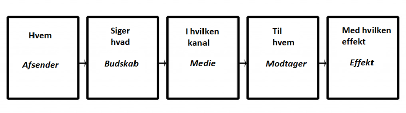

Grundlæggende Kommunikation
-
Som designere så er kommunikation et af vores vigtigste redskaber, for at kunne kommunikere det rigtige, til
de rigtige personer, på den rigtige måde. Men hvad er kommunikation egentlig? Kommunikation er i sig selv en
proces hvor vi meddeler til hinanden. Dette kan være i et hvilket som helst rum, og kommunikationen kan
foregå på mange forskellige måder, men dog oftest gennem sprog. Ordet kommunikation kommer fra ordet
”communicare” fra latin og betyder egentlig at kommunikere eller at gøre fælles. Vi kommunikerer gennem alt
lige fra mimik, tøj, udseende, påklædning, kropssprog, stemmeføring mm., og hvad end det er bevidst eller
ubevidst. Der er som udgangspunkt tre forskellige måder at kommunikere på, og de lyder som følger:
-
- Verbal kommunikation (snak, stemmeføring)
- Non-verbal kommunikation - gestik (arme og kropssprog) , mimik (ansigtsudtryk)
- Skriftlig kommunikation
Kommunikation er både det vi siger og gør, det vi ikke siger og gør, dem vi siger det til (afsender,
modtager, budskab), og vores perception af det. Herudover findes der også to forskellige slags meddelelser:
-
- Kongruente meddelelser: det er meddelelserne via de forskellige verbale og nonverbale kanaler. Ex: ”Det er meget hyggeligt det her” (smiler, glad, udadvendt). Her er modtageren tryg i det der siges, men også i det der menes.
- Inkongruente meddelelser: her er meddelelserne gennem kanalerne (verbale og nonverbale), ikke i overensstemmelse med handlingen. I denne situation vil modtageren være usikker på med hvad der menes. Ex: ”Du ser rigtig dejlig ud” (sur, kigger mærkeligt, ingen øjenkontakt).
Udover dette findes der også to forskellige former for kommunikation, både synkront og asynkront:
-
- Synkron kommunikation: her snakkes der om at de kommunikerende skriver/taler sammen på samme tid.
- Asynkron kommunikation: under disse omstændigheder så kan deltagerne sagtens kommunikere skriftligt til hinanden, men der er ofte en lille tidsforskydning, efter hver besked, i kommunikationen.
I kommunikation findes der også fem forskellige grundantagelse og de er som følger:
-
- 1. Det er ikke muligt at ikke ikke-kommunikere.
- 2. En hvilken som helst given kommunikation består af to dele, indholdet og oplysninger om forholdet mellem dem der kommunikerer.
- 3. Måden vi kommunikerer på og hvordan vi tolker hinandens kommunikation, som også er afhængigt af forholdet mellem de to parter (pauser, tegnsætninger, tone, osv.)
- 4. Folk kommunikerer gennem den digitale kode (hvad der siges) og den analoge kode (hvordan det bliver sagt, kropssprog, tonefald skrifttype og opsætning osv.)
- 5. Selve kommunikationsudvekslingen er enten gennem en symmetrisk eller asymmetrisk tilgang, afhængigt om lighed og magt mellem de to parter.
-
- Attention (opmærksomhed): et er her man skal fange modtagerens opmærksomhed. Det skal være blikfangende, det skal være spændende, og måske endda noget som modtageren kan relatere til.
- Interest (interesse): når opmærksomheden er skabt mellem afsender og modtager er det tid til at fordybe modtageren i emnet, og gøre dem mere nysgerrige og interesserede. En side, eller et produkt skal være ekstraordinært, der skal være en form for ”spin” på det, for at skille sig ud af de andre lignende produkter.
- Desire (ønske): efter at opmærksomheden og interessen er blevet fanget, skal man prøve at skabe et vis behov hos modtageren, modtageren skal ville det her, og også lysten til at have det. Der er tale om at lokke modtageren, fordi produktet ikke nødvendigvis sælger sig selv.
- Action (handling): det er desværre ikke nok at kun skabe interesse for produktet, og måske endda et behov for det, det er også vigtigt at det faktisk bliver solgt. Her kan man med fordel bruge ”Call to action” metoden, ved at eksempelvis sætte en timer på et godt tilbud, på et produkt. Eller måske noget helt andet der får brugeren til at tage handling så hurtigt som muligt.
Vi kan altså som mennesker kun kommunikerer gennem det sprog vi har tilgængeligt. Der hvor sproget stopper, stopper muligheden for at skabe en forståelse for en given ting. Derudover så findes der også kommunikationsparadigmer, som er de forskellige måder at se verden på gennem kommunikation. Der er det samfundsvidenskabelig paradigme, hvor der er fokus på afsender og transmissionen, og det humanistiske paradigme, hvor der er fokus på modtageren og interaktionen.
For at gøre det lettere at kunne beskrive en kommunikationshandling, så har Harold D. Laswell kommet med sin berømte replik i 1948 (som man siden har fået lavet om til en brugbar model i dag), og han siger: ”Hvem? Siger hvad? Gennem hvilken kanal? Til hvem? Med hvilken effekt?  Direkte Link til Laswell modellen Kilde: Kommunikation MMD 1. semester kommunikationsteori.pptx - Kommunikation i multimediedesign 2.udgave - Redaktion Anne Mette Busch (side 79)
Ud over dette er der også i kommunikation blevet gjort brug af IMK-modellen (Interkulturelmarkedskommunikation). Her er teksten blevet sat i centrum, og man kigger også på teksten som andet end bare ord. Under denne model er afsender og modtager fremstillet på lige fod med hinanden, og modellen ser sådan her ud:
 Direkte Link til
IMK modellen
Kilde: Kommunikation MMD 1. semester kommunikationsteori.pptx - Kommunikation i multimediedesign
2.udgave - Redaktion Anne Mette Busch (side 69)
Direkte Link til
IMK modellen
Kilde: Kommunikation MMD 1. semester kommunikationsteori.pptx - Kommunikation i multimediedesign
2.udgave - Redaktion Anne Mette Busch (side 69)
Herudover er der også indenfor kommunikation blevet gjort brug af AIDA modellen som lyder på følgende:
 Direkte Link til
IMK modellen
Kilde: Klik her
Direkte Link til
IMK modellen
Kilde: Klik her